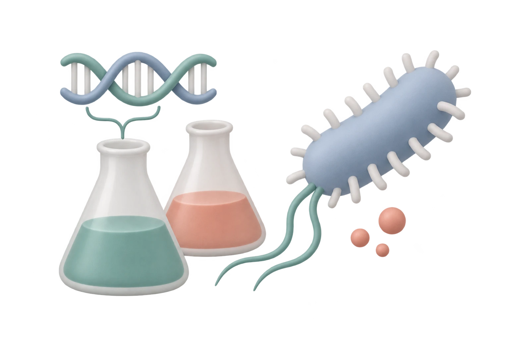

Microbial Isolation & Culture
미생물 분리 배양
사람의 장과 환경에서 새로운 미생물을 분리하고, 살아 있는 균주의 유전체와 대사 기능을 연구합니다.

New Species
이름과 특성이 알려지지 않은 미생물의 발굴
사람의 장과 다양한 환경에는 아직 이름과 특성이 알려지지 않은 미생물이 많습니다. 이러한 미생물이 어떤 조건에서 자라고 무엇을 이용하는지 알아야 군집에서의 역할과 숙주에 미치는 영향을 연구할 수 있습니다. 우리는 장내미생물과 환경미생물을 분리해 배양하고, 새로운 종을 발굴하는 연구를 수행해 왔습니다.
사람의 분변에서 분리해 보고한 Blautia hominis는 이러한 연구의 한 사례입니다. 분리균주의 계통학적 위치와 유전체, 형태 및 생리 특성을 기존 종과 비교해 새로운 종이라는 근거를 제시했습니다. 배양 실험에서는 성장 조건과 생성 대사산물을 확인해, 유전정보와 함께 살아 있는 균주의 특성을 기록했습니다.
International Journal of Systematic and Evolutionary Microbiology, 2018 ↗
Ongoing study
새로운 종을 발굴하는 연구는 장과 환경의 미생물 다양성을 밝히는 일이며, 기능을 직접 실험할 균주를 확보하는 작업이기도 합니다. 현재는 장내미생물과 환경에서 분리한 신종 후보의 분류학적 특성과 생리 기능을 연구하고 있습니다.

Strain Functions
유전체에서 발견한 기능을 살아 있는 균주로 검증
Ongoing study
환자나 환경 검체에서 특정 미생물 기능이 발견되면, 어떤 균이 실제로 그 기능을 수행하는지를 확인해야 합니다. 같은 종 안에서도 균주마다 보유 유전자와 기질 이용 능력이 다르기 때문에, 균종의 이름이나 군집 유전체만으로는 실제 대사반응을 충분히 설명하기 어렵습니다.
우리는 질환과 관련된 균주를 분리하고, 각 균주가 이용하는 기질과 생성하는 대사산물을 비교하는 연구를 수행 중입니다. 유전체에서 예측한 기능을 배양 반응과 연결하고, 군집에서 관찰된 기능의 차이를 어느 균주가 만드는지 조사하고 있습니다.
이 연구는 임상자료에서 찾은 미생물 기능을 직접 검증하고, 식이섬유를 공급했을 때 어떤 균이 반응하는지를 설명하는 데 필요합니다. 분리균주와 미생물 군집을 이용한 실험을 연결해, 질환 및 정밀영양 연구에서 선별한 기능의 작용을 확인합니다.